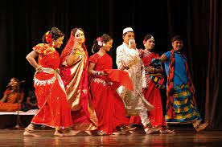
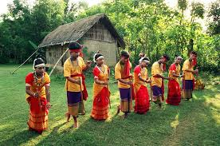

Bangladesh has a rich cultural heritage that dates back thousands of years. The country is known for its vibrant traditions, festivals, music, dance, and literature. Bengali culture is deeply rooted in poetry, drama, and folklore, making it one of the most diverse cultural landscapes in South Asia.
The two biggest festivals celebrated in Bangladesh are Pohela Boishakh (Bengali New Year) and Ekushey February (International Mother Language Day). The country is also known for its traditional crafts, such as Nakshi Kantha embroidery and terracotta pottery.
For more insights, visit Banglapedia or UNESCO Bangladesh.

